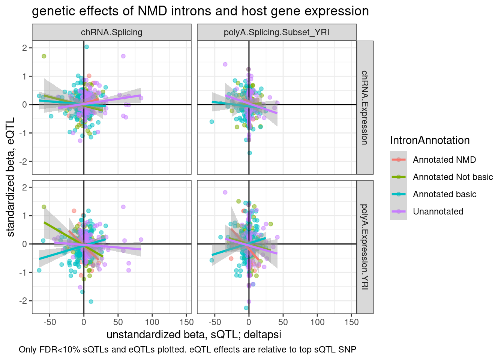
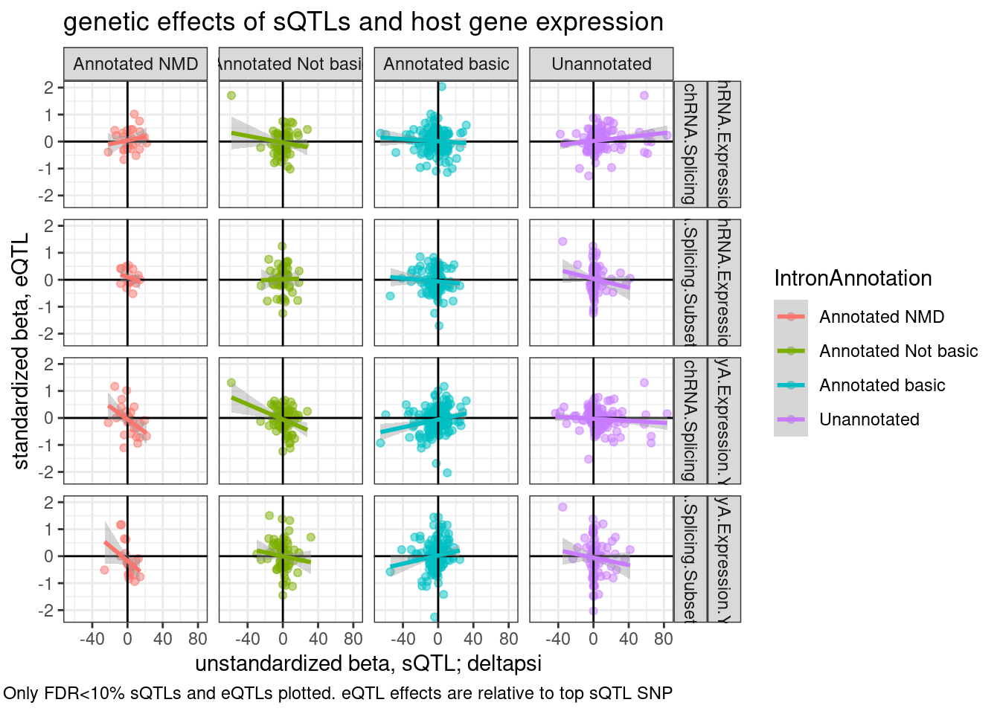
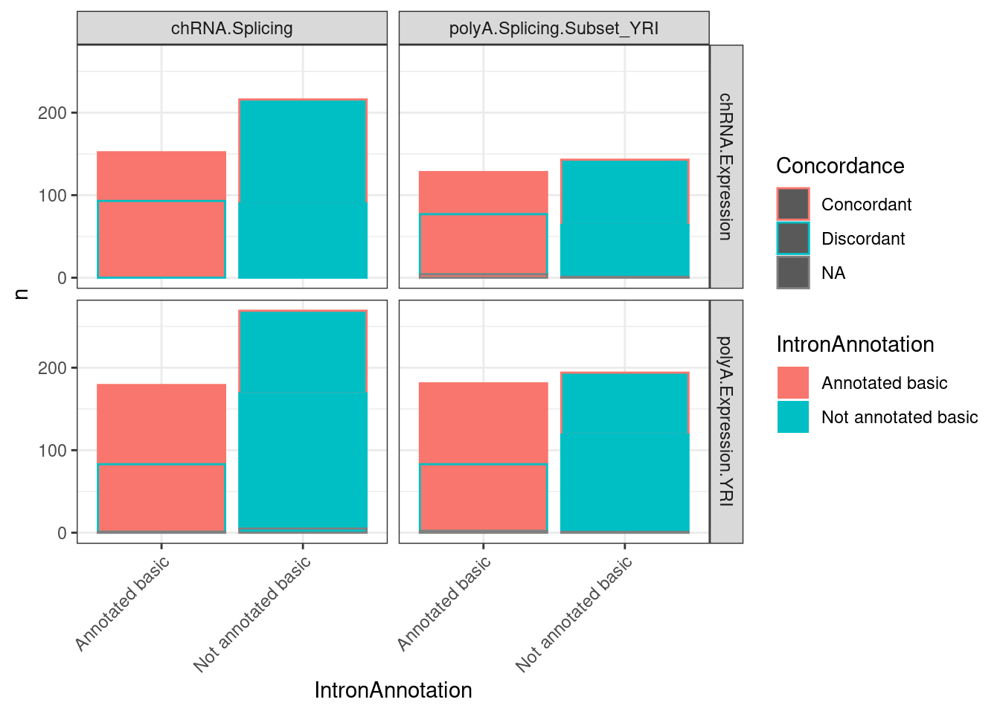

Inspect unstandardized betas
Last updated: 2022-10-24
Checks: 6 1
Knit directory: ChromatinSplicingQTLs/analysis/
This reproducible R Markdown analysis was created with workflowr (version 1.6.2). The Checks tab describes the reproducibility checks that were applied when the results were created. The Past versions tab lists the development history.
The R Markdown is untracked by Git. To know which version of the R Markdown file created these results, you’ll want to first commit it to the Git repo. If you’re still working on the analysis, you can ignore this warning. When you’re finished, you can run wflow_publish to commit the R Markdown file and build the HTML.
Great job! The global environment was empty. Objects defined in the global environment can affect the analysis in your R Markdown file in unknown ways. For reproduciblity it’s best to always run the code in an empty environment.
The command set.seed(20191126) was run prior to running the code in the R Markdown file. Setting a seed ensures that any results that rely on randomness, e.g. subsampling or permutations, are reproducible.
Great job! Recording the operating system, R version, and package versions is critical for reproducibility.
Nice! There were no cached chunks for this analysis, so you can be confident that you successfully produced the results during this run.
Great job! Using relative paths to the files within your workflowr project makes it easier to run your code on other machines.
Great! You are using Git for version control. Tracking code development and connecting the code version to the results is critical for reproducibility.
The results in this page were generated with repository version f864f85. See the Past versions tab to see a history of the changes made to the R Markdown and HTML files.
Note that you need to be careful to ensure that all relevant files for the analysis have been committed to Git prior to generating the results (you can use wflow_publish or wflow_git_commit). workflowr only checks the R Markdown file, but you know if there are other scripts or data files that it depends on. Below is the status of the Git repository when the results were generated:
Ignored files:
Ignored: .DS_Store
Ignored: .Rhistory
Ignored: .Rproj.user/
Ignored: analysis/.Rhistory
Ignored: analysis/figure/
Ignored: code/.DS_Store
Ignored: code/.RData
Ignored: code/._.DS_Store
Ignored: code/._README.md
Ignored: code/._report.html
Ignored: code/.ipynb_checkpoints/
Ignored: code/.snakemake/
Ignored: code/APA_Processing/
Ignored: code/Alignments/
Ignored: code/ChromHMM/
Ignored: code/ENCODE/
Ignored: code/ExpressionAnalysis/
Ignored: code/FastqFastp/
Ignored: code/FastqFastpSE/
Ignored: code/Genotypes/
Ignored: code/H3K36me3_CutAndTag.pdf
Ignored: code/IntronSlopes/
Ignored: code/Metaplots/
Ignored: code/Misc/
Ignored: code/MiscCountTables/
Ignored: code/Multiqc/
Ignored: code/Multiqc_chRNA/
Ignored: code/NonCodingRNA/
Ignored: code/NonCodingRNA_annotation/
Ignored: code/PeakCalling/
Ignored: code/Phenotypes/
Ignored: code/PlotGruberQTLs/
Ignored: code/PlotQTLs/
Ignored: code/ProCapAnalysis/
Ignored: code/QC/
Ignored: code/QTL_SNP_Enrichment/
Ignored: code/QTLs/
Ignored: code/RPKM_tables/
Ignored: code/ReferenceGenome/
Ignored: code/Rplots.pdf
Ignored: code/Session.vim
Ignored: code/SplicingAnalysis/
Ignored: code/TODO
Ignored: code/Tehranchi/
Ignored: code/bigwigs/
Ignored: code/bigwigs_FromNonWASPFilteredReads/
Ignored: code/config/.DS_Store
Ignored: code/config/._.DS_Store
Ignored: code/config/.ipynb_checkpoints/
Ignored: code/dag.pdf
Ignored: code/dag.png
Ignored: code/dag.svg
Ignored: code/debug.ipynb
Ignored: code/debug_python.ipynb
Ignored: code/deepTools/
Ignored: code/featureCounts/
Ignored: code/gwas_summary_stats/
Ignored: code/hyprcoloc/
Ignored: code/igv_session.xml
Ignored: code/log
Ignored: code/logs/
Ignored: code/notebooks/.ipynb_checkpoints/
Ignored: code/pi1/
Ignored: code/rules/.ipynb_checkpoints/
Ignored: code/rules/OldRules/
Ignored: code/rules/notebooks/
Ignored: code/scratch/
Ignored: code/scripts/.CalculatePi1_GetTraitPairs_AllTraits.R.swp
Ignored: code/scripts/.ipynb_checkpoints/
Ignored: code/scripts/GTFtools_0.8.0/
Ignored: code/scripts/__pycache__/
Ignored: code/scripts/liftOverBedpe/liftOverBedpe.py
Ignored: code/snakemake.dryrun.log
Ignored: code/snakemake.log
Ignored: code/snakemake.sbatch.log
Ignored: code/test.introns.bed
Ignored: code/test.introns2.bed
Ignored: data/.DS_Store
Ignored: data/._.DS_Store
Ignored: data/._20220414203249_JASPAR2022_combined_matrices_25818_jaspar.txt
Ignored: data/GWAS_catalog_summary_stats_sources/._list_gwas_summary_statistics_6_Apr_2022-10.csv
Ignored: data/GWAS_catalog_summary_stats_sources/._list_gwas_summary_statistics_6_Apr_2022-11.csv
Ignored: data/GWAS_catalog_summary_stats_sources/._list_gwas_summary_statistics_6_Apr_2022-2.csv
Ignored: data/GWAS_catalog_summary_stats_sources/._list_gwas_summary_statistics_6_Apr_2022-3.csv
Ignored: data/GWAS_catalog_summary_stats_sources/._list_gwas_summary_statistics_6_Apr_2022-4.csv
Ignored: data/GWAS_catalog_summary_stats_sources/._list_gwas_summary_statistics_6_Apr_2022-5.csv
Ignored: data/GWAS_catalog_summary_stats_sources/._list_gwas_summary_statistics_6_Apr_2022-6.csv
Ignored: data/GWAS_catalog_summary_stats_sources/._list_gwas_summary_statistics_6_Apr_2022-7.csv
Ignored: data/GWAS_catalog_summary_stats_sources/._list_gwas_summary_statistics_6_Apr_2022-8.csv
Ignored: data/GWAS_catalog_summary_stats_sources/._list_gwas_summary_statistics_6_Apr_2022.csv
Untracked files:
Untracked: analysis/20221024_InspectUnstandardizedBetas.Rmd
Untracked: code/snakemake_profiles/slurm/__pycache__/
Unstaged changes:
Modified: analysis/20220930_CheckSNP_QTL_Positions.Rmd
Modified: analysis/20221012_IntronRetentionAndExpressionConcordance.Rmd
Modified: code/rules/CreateUnstandardizedPhenotypeMatrices.smk
Modified: code/rules/QTLTools.smk
Modified: code/scripts/GenometracksByGenotype
Note that any generated files, e.g. HTML, png, CSS, etc., are not included in this status report because it is ok for generated content to have uncommitted changes.
There are no past versions. Publish this analysis with wflow_publish() to start tracking its development.
Intro
I mapped QTLs using phenotype table that was standardized, so the beta estimates are in standardized units which are less interpretable. I then used QTLtools again to get beta estimate where the input phenotype table was more interpretable units (ie, leafcutter intronic-psi for splicing, or log2CPM for expression), such that the betas will be more interpretable (ie, deltapsi for splicing, log2FoldChange for expression). Let’s explore that output a bit.
library(tidyverse)
library(data.table)
library(GGally)
PhenotypeAliases <- read_tsv("../data/Phenotypes_recode_for_Plotting.txt")
PermutationPass.dat <- Sys.glob("../code/QTLs/QTLTools/*/PermutationPass.FDR_Added.txt.gz") %>%
setNames(str_replace(., "../code/QTLs/QTLTools/(.+?)/PermutationPass.FDR_Added.txt.gz", "\\1")) %>%
lapply(read_delim, delim=' ') %>%
bind_rows(.id="PhenotypeClass")First explore the data a bit… count QTLs for example…
NumTestFeats <- PermutationPass.dat %>%
count(PhenotypeClass)
NumQTLs <- PermutationPass.dat %>%
filter(q<0.1) %>%
count(PhenotypeClass)
ggplot(data = NumTestFeats,
aes(x=PhenotypeClass, y=n)) +
geom_col() +
geom_text(aes(label=n), color="black", angle=70, hjust=-0.4, size=2) +
geom_errorbar(
data = NumQTLs,
aes(y = n, ymin = n, ymax = n), color="black",lty=1, size=1.5) +
geom_text(
data = NumQTLs,
aes(y=n, label=n), color="red", angle=90, hjust=-0.4, size=2) +
scale_y_continuous(trans='log10', limits=c(1,1E6)) +
theme_classic() +
theme(axis.text.x = element_text(angle = 45, vjust = 1, hjust=1)) +
labs(y="Number features/QTLs", caption="Number of test features (black) and QTLs (red); FDR<10%")Inspect in unstandardized QTLtools output
unstandardized.dat <- Sys.glob("../code/QTLs/QTLTools/*/NominalPass_Unstandardized.txt.gz") %>%
setNames(str_replace(., "../code/QTLs/QTLTools/(.+?)/NominalPass_Unstandardized.txt.gz", "\\1")) %>%
lapply(read_delim, delim=' ', col_names=c(colnames(PermutationPass.dat)[c(2:12, 17:20)], "best_hit")) %>%
bind_rows(.id="PhenotypeClass")
PermutationPass.dat.standardized <- PermutationPass.dat %>%
inner_join(
unstandardized.dat %>%
dplyr::select(PhenotypeClass, phe_id, var_id, slope),
by=c("PhenotypeClass", "phe_id", "var_id"),
suffix=c(".standardized", ".unstandardized")
)
PermutationPass.dat.standardized %>%
filter(q<0.1) %>%
ggplot(aes(x=slope.unstandardized)) +
geom_histogram() +
facet_wrap(~PhenotypeClass, scales="free") +
theme_bw() +
labs(title="Histogram of unstandardized effect sizes for QTLs")PermutationPass.dat.standardized %>%
filter(q<0.1) %>%
ggplot(aes(x=slope.standardized, y=slope.unstandardized)) +
geom_point(alpha=0.05) +
# geom_hex(bins=50) +
scale_fill_viridis_c() +
facet_wrap(~PhenotypeClass, scales="free") +
theme_bw() +
labs(title="Unstandardized vs standardized effect sizes")Ok, these unstandardized effect sizes make sense. The sign is mostly always consistent with the sign of the standardized beta estimate, and the magnitude of things generally make sense… For example the beta for splicing (which is in units of delta psi for each dose of the alt allele) is generally capped at about 50%. The effect sizes for expression and chromatin QTLs are usually within abs(log2FC)<1, so less than two fold change, though there are plenty of examples with larger effects. This matches my intuitions based on plotting a bunch of QTLs.
Recheck splicing/expression concordance
Remake plots from this notebook with more interpretable effect sizes (eg delta-psi, and log2FC for expression) to explore the relationship between activation of NMD-inducing or crpytic spice sites and expression changes.
First, read in data…
TopSNPEffects.ByPairs <- fread("../code/pi1/PairwisePi1Traits.P.all.txt.gz")
NMD.transcript.introns <- read_tsv("../code/SplicingAnalysis/Annotations/NMD/NMD_trancsript_introns.bed.gz", col_names=c("chrom", "start", "stop", "name", "score", "strand")) %>%
mutate(stop=stop+1) %>%
unite(intron, chrom:stop, strand)
Non.NMD.transcript.introns <- read_tsv("../code/SplicingAnalysis/Annotations/NMD/NonNMD_trancsript_introns.bed.gz", col_names=c("chrom", "start", "stop", "name", "score", "strand")) %>%
mutate(stop=stop+1) %>%
unite(intron, chrom:stop, strand)
NMD.specific.introns <- setdiff(NMD.transcript.introns$intron, Non.NMD.transcript.introns$intron)
Intron.Annotations.basic <- read_tsv("../code/SplicingAnalysis/regtools_annotate_combined/basic.bed.gz") %>%
filter(known_junction ==1) %>%
unite(intron, chrom, start, end, strand)
Introns.Annotations.comprehensive <- read_tsv("../code/SplicingAnalysis/regtools_annotate_combined/comprehensive.bed.gz") %>%
filter(known_junction ==1) %>%
unite(intron, chrom, start, end, strand)Now reproduce previous plot
TopSNPEffects.ByPairs %>%
filter(
(PC1 %in% c("chRNA.Expression.Splicing", "Expression.Splicing.Subset_YRI")) &
(PC2 %in% c("polyA.Splicing.Subset_YRI", "chRNA.Splicing")) &
(FDR.x < 0.1) &
(FDR.y < 0.1)) %>%
mutate(source.eQTL = recode(PC1, !!!c("Expression.Splicing.Subset_YRI"="polyA.Expression.YRI", "chRNA.Expression.Splicing"="chRNA.Expression"))) %>%
rename(source.sQTL=PC2) %>%
mutate(intron = str_replace(P2, "^(.+):(.+?):(.+?):clu.+?_([+-])$", "chr\\1_\\2_\\3_\\4")) %>%
mutate(IntronAnnotation = case_when(
intron %in% NMD.specific.introns ~ "Annotated NMD",
intron %in% Intron.Annotations.basic$intron ~ "Annotated basic",
intron %in% Introns.Annotations.comprehensive$intron ~ "Annotated Not basic",
TRUE ~ "Unannotated"
)) %>%
ggplot(aes(y=beta.x, x=trait.x.beta.in.y
, color=IntronAnnotation)) +
geom_point(alpha=0.5) +
geom_vline(xintercept=0) +
geom_hline(yintercept=0) +
geom_smooth(method='lm') +
facet_grid(rows = vars(source.eQTL), cols=vars(source.sQTL)) +
theme_bw() +
labs(title="genetic effects of NMD introns and host gene expression", x="beta, sQTL", y="beta, eQTL", caption="Only FDR<10% sQTLs and eQTLs plotted. sQTL effects are relative to top eQTL SNP")
Ok, now plot similar plot, but make use unstandardized betas. Note that the previous plot was using slightly different cis-windows for QTL-mapping that the unstandardized beta estimates I have on hand, so some points might dissapear if the top QTL (in the gene-wise “ForColoc”" style cis-QTL mapping) is outside the cis-window I used in the standard QTL mapping.
unstandardized.dat %>% distinct(PhenotypeClass)# A tibble: 15 × 1
PhenotypeClass
<chr>
1 CTCF
2 Expression.Splicing.Subset_YRI
3 Expression.Splicing
4 H3K27AC
5 H3K36ME3
6 H3K4ME1
7 H3K4ME3
8 MetabolicLabelled.30min.Splicing
9 MetabolicLabelled.30min
10 MetabolicLabelled.60min.Splicing
11 MetabolicLabelled.60min
12 chRNA.Expression.Splicing
13 chRNA.Splicing
14 polyA.Splicing.Subset_YRI
15 polyA.Splicing P <- TopSNPEffects.ByPairs %>%
filter(
(PC1 %in% c("chRNA.Expression.Splicing", "Expression.Splicing.Subset_YRI")) &
(PC2 %in% c("polyA.Splicing.Subset_YRI", "chRNA.Splicing")) &
(FDR.x < 0.1) &
(FDR.y < 0.1)) %>%
inner_join(
unstandardized.dat %>%
dplyr::select(PC1=PhenotypeClass, P1=phe_id, singletrait_topvar.x=var_id, beta.x.unstandardized=slope)
) %>%
mutate(source.eQTL = recode(PC1, !!!c("Expression.Splicing.Subset_YRI"="polyA.Expression.YRI", "chRNA.Expression.Splicing"="chRNA.Expression"))) %>%
rename(source.sQTL=PC2) %>%
mutate(intron = str_replace(P2, "^(.+):(.+?):(.+?):clu.+?_([+-])$", "chr\\1_\\2_\\3_\\4")) %>%
mutate(IntronAnnotation = case_when(
intron %in% NMD.specific.introns ~ "Annotated NMD",
intron %in% Intron.Annotations.basic$intron ~ "Annotated basic",
intron %in% Introns.Annotations.comprehensive$intron ~ "Annotated Not basic",
TRUE ~ "Unannotated"
)) %>%
ggplot(aes(y=beta.x.unstandardized, x=trait.x.beta.in.y
, color=IntronAnnotation)) +
geom_point(alpha=0.5) +
geom_vline(xintercept=0) +
geom_hline(yintercept=0) +
geom_smooth(method='lm') +
facet_grid(rows = vars(source.eQTL), cols=vars(source.sQTL)) +
theme_bw() +
labs(title="genetic effects of NMD introns and host gene expression", x="standardized beta, sQTL", y="unstandardized beta, eQTL (Log2FC)", caption="Only FDR<10% sQTLs and eQTLs plotted. sQTL effects are relative to top eQTL SNP")
PP +
coord_cartesian(ylim=c(-1,1))Ok, I now realize I can’t really do this plot correctly (with both the x-axis and y-axis in unstandardized units) without doing some editing to the snakemake pipeline to get nominal pass QTL results in the genewise way…
For now, I can only do one axis unstandardized… Let’s ‘unstandardize’ the sQTLs. It’s also clear from this plot that the purple (unannotated) regression lines are driven by a few outlier points with many introns mapping to the same gene. Let’s replot with one point per gene or one point per intron cluster…
P2.dat <- TopSNPEffects.ByPairs %>%
filter(
(PC2 %in% c("chRNA.Expression.Splicing", "Expression.Splicing.Subset_YRI")) &
(PC1 %in% c("polyA.Splicing.Subset_YRI", "chRNA.Splicing")) &
(FDR.x < 0.1) &
(FDR.y < 0.1)) %>%
inner_join(
unstandardized.dat %>%
dplyr::select(PC1=PhenotypeClass, P1=phe_id, singletrait_topvar.x=var_id, beta.x.unstandardized=slope)
) %>%
mutate(source.eQTL = recode(PC2, !!!c("Expression.Splicing.Subset_YRI"="polyA.Expression.YRI", "chRNA.Expression.Splicing"="chRNA.Expression"))) %>%
rename(source.sQTL=PC1) %>%
mutate(intron = str_replace(P1, "^(.+):(.+?):(.+?):clu.+?_([+-])$", "chr\\1_\\2_\\3_\\4")) %>%
mutate(IntronAnnotation = case_when(
intron %in% NMD.specific.introns ~ "Annotated NMD",
intron %in% Intron.Annotations.basic$intron ~ "Annotated basic",
intron %in% Introns.Annotations.comprehensive$intron ~ "Annotated Not basic",
TRUE ~ "Unannotated"
))
ggplot(P2.dat, aes(x=beta.x.unstandardized, y=trait.x.beta.in.y
, color=IntronAnnotation)) +
geom_point(alpha=0.5) +
geom_vline(xintercept=0) +
geom_hline(yintercept=0) +
geom_smooth(method='lm') +
facet_grid(rows = vars(source.eQTL), cols=vars(source.sQTL)) +
theme_bw() +
labs(title="genetic effects of NMD introns and host gene expression", x="unstandardized beta, sQTL; deltapsi", y="standardized beta, eQTL", caption="Only FDR<10% sQTLs and eQTLs plotted. eQTL effects are relative to top sQTL SNP")Now let’s consider aggregating the intron QTL points by cluster or by gene
P2.dat %>%
mutate(cluster = str_extract(P1, "clu.+$")) %>%
distinct(GeneLocus, cluster) %>%
count(cluster) %>%
count(n) n nn
1: 1 679
2: 2 21If we aggregated by gene, 21/700 of the genes will have multiple clusters. I think that’s acceptable. Let’s just aggregate by gene for simplicity…
P2.dat %>%
group_by(IntronAnnotation, source.sQTL, source.eQTL, trait.x.beta.in.y) %>%
summarise(aggregated_deltapsi=sum(beta.x.unstandardized
)) %>%
ungroup() %>%
ggplot(aes(x=aggregated_deltapsi, y=trait.x.beta.in.y
, color=IntronAnnotation)) +
geom_point(alpha=0.5) +
geom_vline(xintercept=0) +
geom_hline(yintercept=0) +
geom_smooth(method='lm') +
facet_grid(rows = vars(source.eQTL), cols=vars(source.sQTL)) +
theme_bw() +
labs(title="genetic effects of NMD introns and host gene expression", x="unstandardized beta, sQTL; deltapsi", y="standardized beta, eQTL", caption="Only FDR<10% sQTLs and eQTLs plotted. eQTL effects are relative to top sQTL SNP")
There’s so many overlapping points. Let me seperate the colors…
P2.dat %>%
group_by(IntronAnnotation, P2, source.sQTL, source.eQTL, trait.x.beta.in.y) %>%
summarise(aggregated_deltapsi=sum(beta.x.unstandardized
)) %>%
ungroup() %>%
ggplot(aes(x=aggregated_deltapsi, y=trait.x.beta.in.y
, color=IntronAnnotation)) +
geom_point(alpha=0.5) +
geom_vline(xintercept=0) +
geom_hline(yintercept=0) +
geom_smooth(method='lm') +
facet_grid(source.eQTL ~ source.sQTL ~ IntronAnnotation ) +
theme_bw() +
labs(title="genetic effects of sQTLs and host gene expression", x="unstandardized beta, sQTL; deltapsi", y="standardized beta, eQTL", caption="Only FDR<10% sQTLs and eQTLs plotted. eQTL effects are relative to top sQTL SNP") Hmm, from this where there aren’t double plotting lot’s of points because i aggregated the intron effects by gene, there isn’t an obvious correlation between increase in unannotated splicing resulting in more expression.
Let’s also try expressing these correlations just by the overabundance of concordant/discordanct signs between the sQTL and eQTL after this gene-wise aggregation for sQTLs
P2.dat %>%
group_by(IntronAnnotation, P2, source.sQTL, source.eQTL, trait.x.beta.in.y) %>%
summarise(aggregated_deltapsi=sum(beta.x.unstandardized
)) %>%
ungroup() %>%
mutate(Concordance = if_else(sign(trait.x.beta.in.y) == sign(aggregated_deltapsi), "Concordant", "Discordant")) %>%
count(IntronAnnotation, source.sQTL, source.eQTL, Concordance) %>%
ggplot(aes(x=IntronAnnotation, y=n, fill=IntronAnnotation, color=Concordance)) +
geom_col() +
facet_grid(source.eQTL ~ source.sQTL) +
theme_bw() +
theme(axis.text.x = element_text(angle = 45, vjust = 1, hjust=1))Now let’s come up with a lower limit for how many eQTLs might be explained by these splicing effects. To do this I will count the overabundance of discordant sign eQTL/sQTLs, and ask what fraction those are out of all eQTLs.
Said another way, I will consider an sQTLs mapped in either chRNA or polyA, and count how many have sQTL signs consistent with my expectations on how it would effect expression. For this analysis, it might be simplest to first just combine the “Annotated NMD”, “Annotated Not basic”, and “Unannotated” categories by summing their deltapsi… Before I do that, let’s look at the deltapsi distributions…
P2.dat %>%
group_by(IntronAnnotation, P2, source.sQTL, source.eQTL, trait.x.beta.in.y) %>%
summarise(aggregated_deltapsi=sum(beta.x.unstandardized
)) %>%
ggplot(aes(x=aggregated_deltapsi, color=IntronAnnotation)) +
stat_ecdf() +
facet_grid(source.eQTL ~ source.sQTL) +
theme_bw()P2.dat %>%
mutate(IntronAnnotation = if_else(IntronAnnotation=="Annotated basic", "Annotated basic", "Not annotated basic")) %>%
group_by(IntronAnnotation, P2, source.sQTL, source.eQTL, trait.x.beta.in.y) %>%
summarise(aggregated_deltapsi=sum(beta.x.unstandardized
)) %>%
ungroup() %>%
mutate(Concordance = if_else(sign(trait.x.beta.in.y) == sign(aggregated_deltapsi), "Concordant", "Discordant")) %>%
count(IntronAnnotation, source.sQTL, source.eQTL, Concordance) %>%
ggplot(aes(x=IntronAnnotation, y=n, fill=IntronAnnotation, color=Concordance)) +
geom_col() +
facet_grid(source.eQTL ~ source.sQTL) +
theme_bw() +
theme(axis.text.x = element_text(angle = 45, vjust = 1, hjust=1))
Actually, below is perhaps a more intuitive graph of what I mean:
Number_eQTLs_sQTLs_consistentWithNMD <- P2.dat %>%
filter(source.eQTL == "polyA.Expression.YRI") %>%
mutate(IntronAnnotation = if_else(IntronAnnotation=="Annotated basic", "Annotated basic", "Not annotated basic")) %>%
group_by(IntronAnnotation, P2, source.sQTL, source.eQTL, trait.x.beta.in.y) %>%
summarise(aggregated_deltapsi=sum(beta.x.unstandardized
)) %>%
ungroup() %>%
mutate(Concordance = if_else(sign(trait.x.beta.in.y) == sign(aggregated_deltapsi), "Concordant", "Discordant")) %>%
mutate(ConcordanceConsistentWithNMD = case_when(
IntronAnnotation == "Annotated basic" & Concordance=="Concordant" ~ "Consistent",
IntronAnnotation == "Not annotated basic" & Concordance=="Discordant" ~ "Consistent",
TRUE ~ "Inconsistent"
)) %>%
distinct(P2, .keep_all=T) %>%
count(ConcordanceConsistentWithNMD)
Number_eQTLs_sQTLs_consistentWithNMD$n[1] - Number_eQTLs_sQTLs_consistentWithNMD$n[2][1] 73So perhaps 73 QTLs might be due to NMD mechanism… That is out of how many eQTLs…
TopSNPEffects.ByPairs %>%
filter(
(PC1 %in% c("Expression.Splicing.Subset_YRI")) &
(FDR.x < 0.1)) %>%
distinct(P1) %>% nrow()[1] 4021LowerBound <- 73/4021 * 100
LowerBound[1] 1.815469Ok, so not many. perhaps 2% of eQTLs might be explained by that mechanism. Note that here I filtered for sQTLs < 10% FDR. Perhaps that strictness is part of why it is important to view this as a conservative estimate or lower bound.. Right now I’m now set up to be more lenient than that, I would have to reprocess some other datafiles…
Let’s also crudley verify that these QTLs are more aligned (the top eQTL and sQTL SNP is the same or close) in the NMD model cases, versus the other QTLs…
DistanceDist.dat <- P2.dat %>%
mutate(HighConfidenceNMD_eQTLs = if_else(
source.eQTL == "polyA.Expression.YRI" &
source.sQTL %in% c("polyA.Splicing.Subset_YRI", "chRNA.Splicing") &
IntronAnnotation == c("Annotated NMD") &
!sign(beta.x) == trait.x.beta.in.y,
"High confidence NMD sQTL --> eQTL",
"Other"
)) %>%
mutate(Dist = abs(singletrait_topvar_pos.y-singletrait_topvar_pos.x)) %>%
mutate(Dist=pmax(1, Dist))
ggplot(DistanceDist.dat, aes(x=Dist)) +
geom_histogram() +
scale_x_continuous(trans='log10') +
facet_wrap(~HighConfidenceNMD_eQTLs, scales="free_y") +
theme_bw() +
labs(title="Distance between top sQTL and top eQTL SNP", x="Dist b/n top eQTL and sQTL SNP", caption=str_wrap("High confidence NMD means polyA|chRNA sQTL and eQTL in polyA with opposite sign betas for annotated NMD introns", 30))ggplot(DistanceDist.dat, aes(x=Dist, color=HighConfidenceNMD_eQTLs)) +
stat_ecdf() +
scale_x_continuous(trans='log10') +
theme_bw() +
labs(title="Distance between top sQTL and top eQTL SNP", x="Dist b/n top eQTL and sQTL SNP", caption=str_wrap("High confidence NMD means polyA|chRNA sQTL and eQTL in polyA with opposite sign betas for annotated NMD introns", 30))
Hmm… this makes me skeptical whether this distance between top SNPs is even a useful way to think about stuff. I don’t think there is a bug in my code, given how the beta signs make sense.
Anyway, what if we included the whole geuvadis dataset for splicing.. Just curious what that the results will like considering more sQTLs… Now go back to counting sQTLs/eQTLs consistent/inconsistent with NMD mechanism when we include all GEUVADIS samples.
P2.dat <- TopSNPEffects.ByPairs %>%
filter(
(PC2 %in% c("chRNA.Expression.Splicing", "Expression.Splicing.Subset_YRI")) &
(PC1 %in% c("polyA.Splicing.Subset_YRI", "chRNA.Splicing", "polyA.Splicing")) &
(FDR.x < 0.1) &
(FDR.y < 0.1)) %>%
inner_join(
unstandardized.dat %>%
dplyr::select(PC1=PhenotypeClass, P1=phe_id, singletrait_topvar.x=var_id, beta.x.unstandardized=slope)
) %>%
mutate(source.eQTL = recode(PC2, !!!c("Expression.Splicing.Subset_YRI"="polyA.Expression.YRI", "chRNA.Expression.Splicing"="chRNA.Expression"))) %>%
rename(source.sQTL=PC1) %>%
mutate(intron = str_replace(P1, "^(.+):(.+?):(.+?):clu.+?_([+-])$", "chr\\1_\\2_\\3_\\4")) %>%
mutate(IntronAnnotation = case_when(
intron %in% NMD.specific.introns ~ "Annotated NMD",
intron %in% Intron.Annotations.basic$intron ~ "Annotated basic",
intron %in% Introns.Annotations.comprehensive$intron ~ "Annotated Not basic",
TRUE ~ "Unannotated"
))
P2.dat %>%
group_by(IntronAnnotation, P2, source.sQTL, source.eQTL, trait.x.beta.in.y) %>%
summarise(aggregated_deltapsi=sum(beta.x.unstandardized
)) %>%
ungroup() %>%
ggplot(aes(x=aggregated_deltapsi, y=trait.x.beta.in.y
, color=IntronAnnotation)) +
geom_point(alpha=0.5) +
geom_vline(xintercept=0) +
geom_hline(yintercept=0) +
geom_smooth(method='lm') +
facet_grid(source.eQTL ~ source.sQTL ~ IntronAnnotation ) +
theme_bw() +
labs(title="genetic effects of sQTLs and host gene expression", x="unstandardized beta, sQTL; deltapsi", y="standardized beta, eQTL", caption=str_wrap("Only FDR<10% sQTLs and eQTLs plotted. eQTL effects are relative to top sQTL SNP. Full geauvadis sQTLs are 'polyA.Splicing'"))Number_eQTLs_sQTLs_consistentWithNMD <- P2.dat %>%
filter(source.eQTL == "polyA.Expression.YRI") %>%
mutate(IntronAnnotation = if_else(IntronAnnotation=="Annotated basic", "Annotated basic", "Not annotated basic")) %>%
group_by(IntronAnnotation, P2, source.sQTL, source.eQTL, trait.x.beta.in.y) %>%
summarise(aggregated_deltapsi=sum(beta.x.unstandardized
)) %>%
ungroup() %>%
mutate(Concordance = if_else(sign(trait.x.beta.in.y) == sign(aggregated_deltapsi), "Concordant", "Discordant")) %>%
mutate(ConcordanceConsistentWithNMD = case_when(
IntronAnnotation == "Annotated basic" & Concordance=="Concordant" ~ "Consistent",
IntronAnnotation == "Not annotated basic" & Concordance=="Discordant" ~ "Consistent",
TRUE ~ "Inconsistent"
)) %>%
distinct(P2, .keep_all=T) %>%
count(ConcordanceConsistentWithNMD)
Number_eQTLs_sQTLs_consistentWithNMD# A tibble: 2 × 2
ConcordanceConsistentWithNMD n
<chr> <int>
1 Consistent 598
2 Inconsistent 584Ok, so now when I consider all sQTLs mapped with the whole GEUVADIS the overabundance of sQTL/eQTLs signs consistent with NMD model is actually fewer. So maybe just adding power this way isn’t actually helpful.
sessionInfo()R version 3.6.1 (2019-07-05)
Platform: x86_64-pc-linux-gnu (64-bit)
Running under: CentOS Linux 7 (Core)
Matrix products: default
BLAS/LAPACK: /software/openblas-0.2.19-el7-x86_64/lib/libopenblas_haswellp-r0.2.19.so
locale:
[1] LC_CTYPE=en_US.UTF-8 LC_NUMERIC=C LC_TIME=C
[4] LC_COLLATE=C LC_MONETARY=C LC_MESSAGES=C
[7] LC_PAPER=C LC_NAME=C LC_ADDRESS=C
[10] LC_TELEPHONE=C LC_MEASUREMENT=C LC_IDENTIFICATION=C
attached base packages:
[1] stats graphics grDevices utils datasets methods base
other attached packages:
[1] GGally_1.4.0 data.table_1.14.2 forcats_0.4.0 stringr_1.4.0
[5] dplyr_1.0.9 purrr_0.3.4 readr_1.3.1 tidyr_1.2.0
[9] tibble_3.1.7 ggplot2_3.3.6 tidyverse_1.3.0
loaded via a namespace (and not attached):
[1] httr_1.4.4 jsonlite_1.6 viridisLite_0.3.0 splines_3.6.1
[5] R.utils_2.9.0 modelr_0.1.8 assertthat_0.2.1 highr_0.9
[9] cellranger_1.1.0 yaml_2.2.0 pillar_1.7.0 backports_1.4.1
[13] lattice_0.20-38 glue_1.6.2 digest_0.6.20 RColorBrewer_1.1-2
[17] promises_1.0.1 rvest_0.3.5 colorspace_1.4-1 htmltools_0.5.3
[21] httpuv_1.5.1 Matrix_1.2-18 R.oo_1.22.0 plyr_1.8.4
[25] pkgconfig_2.0.2 broom_1.0.0 haven_2.3.1 scales_1.1.0
[29] later_0.8.0 git2r_0.26.1 mgcv_1.8-40 generics_0.1.3
[33] farver_2.1.0 ellipsis_0.3.2 withr_2.5.0 cli_3.3.0
[37] magrittr_1.5 crayon_1.3.4 readxl_1.3.1 evaluate_0.15
[41] R.methodsS3_1.7.1 fs_1.5.2 fansi_0.4.0 nlme_3.1-140
[45] xml2_1.3.2 tools_3.6.1 hms_0.5.3 lifecycle_1.0.1
[49] munsell_0.5.0 reprex_0.3.0 compiler_3.6.1 rlang_1.0.5
[53] grid_3.6.1 rstudioapi_0.14 labeling_0.3 rmarkdown_1.13
[57] gtable_0.3.0 DBI_1.1.0 reshape_0.8.8 R6_2.4.0
[61] lubridate_1.7.4 knitr_1.39 fastmap_1.1.0 utf8_1.1.4
[65] workflowr_1.6.2 rprojroot_2.0.2 stringi_1.4.3 Rcpp_1.0.5
[69] vctrs_0.4.1 dbplyr_1.4.2 tidyselect_1.1.2 xfun_0.31